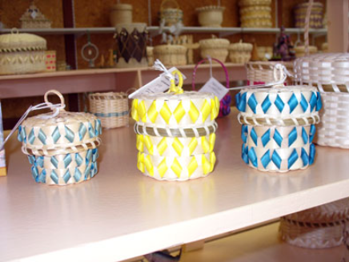
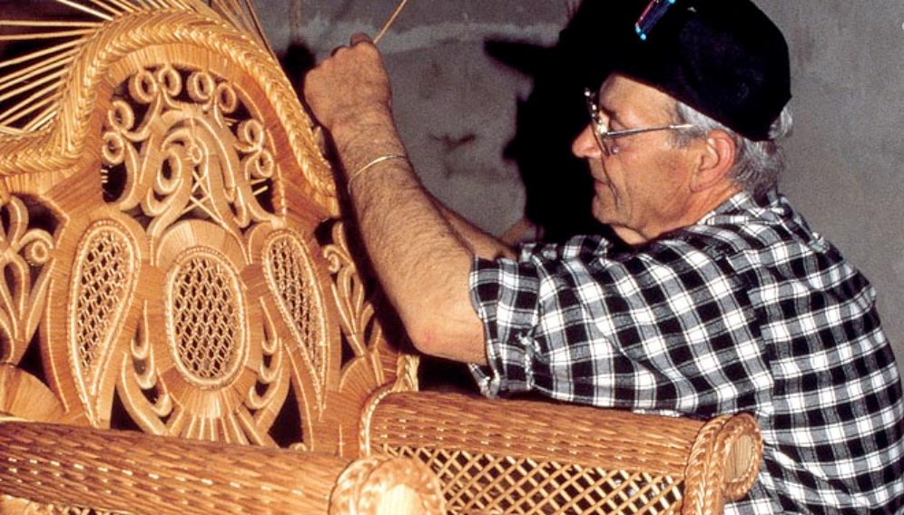

Les Micmacs — ou Mi'kmaq dans leur propre langue — sont l'un des peuples autochtones les plus anciens et les plus résilients de l'Est du Canada. Leur territoire ancestral s'étend de la Gaspésie québécoise jusqu'à l'ensemble des provinces de l'Atlantique. Pêcheurs, chasseurs et navigateurs hors pair, ils ont forgé une civilisation maritime unique, profondément liée aux vents, aux marées et aux forêts de la côte. Aujourd'hui, les Mi'kmaq du Québec perpétuent un héritage millénaire de résistance, de sagesse et de fierté culturelle.
Origines et identité
Les Mi'kmaq font partie de la grande famille des peuples algonquiens, mais constituent une nation distincte par leur langue, leurs traditions maritimes et leur histoire propre. Le nom Mi'kmaq signifie « les gens de la mer » ou « nos terres » — une affirmation d'appartenance et de lien indéfectible avec le territoire.
Leur langue, le mi'kmaw, est une langue polysynthétique de la famille algonquienne. Elle est encore parlée dans plusieurs communautés, notamment à Gesgapegiag. Le mot « Mi'kmaw » s'écrit parfois avec un « s » à la fin pour le pluriel, mais la forme singulière sans « s » est aujourd'hui privilégiée dans les écrits officiels.
Le terme Micmacs, utilisé par les Européens, vient probablement d'une déformation de Mi'kmaq. Certaines sources historiques relèvent la variante « Souriquois » dans les écrits français du 17e siècle — un terme aujourd'hui tombé en désuétude.
🌊 Cosmologie mi'kmaq — Le monde créé par Glooscap
- Glooscap (ou Gluskab) est le héros créateur et transformateur de la cosmologie mi'kmaq — à la fois sage, espiègle et bienveillant. Il aurait façonné le monde, enseigné les premiers humains et combattu les forces du chaos.
- Les Mi'kmaq croient que tous les êtres possèdent un esprit — animaux, plantes, rochers, rivières. Cette vision animiste fonde leur relation de respect profond avec la nature.
- Les sages et aînés jouent un rôle central : gardiens de la tradition, de la langue et de la spiritualité, ils transmettent les enseignements par la parole et l'exemple.
- La Grande Roue de la vie structure la spiritualité mi'kmaq : naissance, adolescence, âge adulte, vieillesse — chaque étape marquée par des cérémonies et des responsabilités communautaires.
Territoire et géographie
Le territoire traditionnel des Mi'kmaq, appelé Mi'kma'ki, couvre une immense région de l'Est du Canada : la Gaspésie québécoise, le Nouveau-Brunswick, l'Île-du-Prince-Édouard, la Nouvelle-Écosse et une partie de Terre-Neuve. Cette terre de forêts, de lacs, de rivières et d'un littoral découpé a façonné une culture profondément maritime.
Au Québec, la présence mi'kmaq est centrée sur la péninsule gaspésienne, notamment la baie des Chaleurs et la région de Maria. Le territoire gaspésien offre une diversité exceptionnelle : côtes rocheuses, forêts de conifères, rivières saumonneuses et montagnes — un écosystème que les Mi'kmaq connaissent et protègent depuis des millénaires.
Mi'kma'ki — le territoire ancestral mi'kmaq, de la Gaspésie aux Maritimes
Culture, langue et traditions
La culture mi'kmaq est marquée par une relation intime avec la mer et les forêts. Pêcheurs et navigateurs accomplis, les Mi'kmaq parcouraient la côte en miahtuw (canot d'écorce) pour la pêche au saumon, au marsouin et à la baleine. Le tapis de racines — une natte tressée servant à sécher le poisson — est un symbole de leur ingéniosité.
L'artisanat mi'kmaq est réputé : paniers en frêne décorés de motifs géométriques, vannerie, mocassins et objets sculptés. La broderie de porc-épic et les motifs floraux colorés distinguent leur esthétique de celle des autres nations algonquiennes.

Vannerie mi'kmaq — paniers en frêne aux motifs géométriques et couleurs vives
Langue : le Mi'kmaw
Langue algonquienne distincte, parlée par environ 8 000 personnes au Canada. Elle utilise l'alphabet latin standardisé. Les aînés de Gesgapegiag transmettent la langue aux jeunes dans des programmes d'immersion et des cercles de parole.
Maritime
Les Mi'kmaq sont un peuple de la mer — pêche au saumon, chasse au marsouin, navigation côtière. Les routes maritimes étaient les artères vitales du territoire, reliant les villages et les familles de la baie des Chaleurs à la Nouvelle-Écosse.
Artisanat
Paniers en frêne, vannerie, broderies de porc-épic et mocassins. Les motifs géométriques et floraux mi'kmaq sont reconnaissables entre tous — une tradition vivante transmise par les aînées.
Tambour et chant
Le tambour est sacré dans les cérémonies. Les chants traditionnels, transmis oralement, accompagnent les pow-wow, les rites de passage et les moments de rassemblement communautaire.
Saumon et rivières
Le saumon est un aliment sacré et un pilier alimentaire. Les rivières gaspésiennes — comme la Rivière Saint-Jean — sont des voies de vie, de transport et de spiritualité depuis des millénaires.
Forêt sacrée
La forêt boréale n'est pas une ressource, mais un espace vivant habité par les esprits. Chaque arbre, chaque rivière, chaque montagne porte un nom mi'kmaw et une histoire.

Savoir-faire traditionnel — le tissage de l'osier et du frêne, transmis par les aînés
« La mer est notre route, la forêt est notre maison, et le tambour est le battement de notre cœur. »
— Sagesse mi'kmaq traditionnelle
Histoire ancienne et organisation sociale
Les Mi'kmaq habitent Mi'kma'ki depuis au moins 4 000 ans, selon les données archéologiques. Leur société était organisée en districts — unités territoriales et politiques autonomes mais liées par une langue, une culture et une identité communes.
La structure sociale mi'kmaq était non hiérarchique : les décisions se prenaient par consensus dans des conseils de sages. Les sagamaw (chefs) étaient choisis pour leur sagesse, leur générosité et leur capacité à écouter — non pour imposer leur volonté. Cette gouvernance horizontale a surpris bien des observateurs européens.
Les Mi'kmaq entretenaient des relations d'alliance et d'échange avec les Malecites, les Passamaquoddys et les Abénaquis, formant un vaste réseau de solidarité dans l'Est du continent.
🏛️ Organisation traditionnelle — Sept districts
- Mi'kma'ki était divisée en sept districts (Kespukwitk, Siknikt, etc.), chacun avec son propre conseil et son sagamaw.
- Le Conseil des Sept districts réunissait les chefs pour les décisions concernant l'ensemble de la nation — guerre, paix, alliances.
- Les sagamaw n'étaient pas des rois : leur autorité venait de leur capacité à rassembler et à servir le peuple.
- Les aînés étaient les gardiens de la tradition, de la loi orale et de la spiritualité — leur parole avait plus de poids que toute autorité coercitive.
Le contact avec les Européens
Les Mi'kmaq sont parmi les premiers peuples autochtones d'Amérique du Nord à entrer en contact avec les Européens. Dès 1534, Jacques Cartier accoste sur la côte gaspésienne et rencontre des Mi'kmaq lors de son deuxième voyage — premier contact documenté entre un Européen et ce peuple.
Les Mi'kmaq deviennent rapidement des partenaires commerciaux et alliés stratégiques des Français dans la traite des fourrures. Leur maîtrise de la navigation côtière et leurs réseaux d'échange en font des intermédiaires indispensables entre les Français et les autres nations de l'intérieur.
En 1604, lors de l'établissement de l'île Sainte-Croix (Maine) puis de Port-Royal (Nouvelle-Écosse), les Mi'kmaq offrent aux Français nourriture, guidance et protection. Cette alliance franco-mi'kmaq durera plus de 150 ans et sera déterminante dans l'histoire de l'Acadie.
🤝 Alliance franco-mi'kmaq
- Les Mi'kmaq ont accueilli les premiers colons français et leur ont appris à survivre dans le climat rigoureux de l'Atlantique.
- Ils ont fourni guides, interprètes, guerriers et vivres aux Français dans toutes les guerres coloniales contre les Anglais.
- La neutralité mi'kmaq pendant la guerre de Sept Ans a été un facteur déterminant — bien que le traité d'Utrecht (1713) ait placé leur territoire sous influence britannique.
- Les missionnaires jésuites s'établissent chez les Mi'kmaq dès les années 1610, fondant des missions à Port-Royal et plus tard à Malagash.
Colonisation, dépossession et résilience
Premier contact
Jacques Cartier accoste à Gaspé. Échanges commerciaux et diplomatiques avec les Mi'kmaq. Début d'une relation qui traversera les siècles.
Port-Royal
Établissement français en Acadie avec l'appui mi'kmaq. Alliance durable qui fonde la survie de la colonie naissante.
Guerres coloniales
Les Mi'kmaq combattent aux côtés des Français contre les Britanniques. Après la défaite de 1763, ils doivent composer avec une nouvelle puissance coloniale qui ignore leurs droits.
Tradition des traités
La signature de traités de paix et d'amitié entre les Mi'kmaq et la Couronne britannique vise à établir une coexistence pacifique. Ces traités sont aujourd'hui au cœur des revendications contemporaines.
Pensionnats et assimilation
Comme toutes les nations autochtones, les Mi'kmaq subissent la politique d'assimilation forcée : pensionnats, interdiction des cérémonies, loi sur les Indiens. Des générations d'enfants sont arrachées à leurs familles.
Les communautés mi'kmaq du Québec
Au Québec, la communauté mi'kmaq la plus importante est Gesgapegiag, située sur la rive sud de la baie des Chaleurs, près de Maria en Gaspésie. C'est le cœur de la présence mi'kmaq québécoise — un lieu de vie, de culture et de résilience.
🏘️ Gesgapegiag
Gaspésie — La principale communauté mi'kmaq du Québec. Réserve sur la baie des Chaleurs. École, centre culturel, services communautaires.
🏘️ Listuguj
Nouveau-Brunswick — Communauté sœur de Gesgapegiag, sur la rive nord de la baie des Chaleurs. Liens familiaux et culturels très forts.
🏘️ Eskasoni
Nouvelle-Écosse — La plus grande communauté mi'kmaq des Maritimes. Centre culturel, école immersion, orchestre de jeunes.
Les Mi'kmaq du Québec sont principalement concentrés à Gesgapegiag, mais leurs liens familiaux et culturels s'étendent à travers toutes les communautés de Mi'kma'ki.
Les Mi'kmaq aujourd'hui
Les Mi'kmaq du Québec, forts d'une identité culturelle profondément ancrée, traversent le 21e siècle avec détermination. La communauté de Gesgapegiag développe des projets éducatifs, culturels et économiques pour assurer la transmission de la langue et des traditions.
Les traités de 1752 et les droits ancestraux non éteints sont au cœur des négociations avec les gouvernements provincial et fédéral. Les Mi'kmaq revendiquent la reconnaissance de leurs droits territoriaux, la protection des ressources naturelles et le respect de leur gouvernance traditionnelle.
La renaissance culturelle est en marche : les jeunes apprennent le mi'kmaw, les aînés transmettent les chants et les savoirs, et les artistes mi'kmaq exposent leurs œuvres au Québec et à l'international.
Revival de la langue
Des programmes d'immersion mi'kmaw sont offerts à Gesgapegiag. Les aînés enseignent la langue aux enfants, perpétuant une tradition orale millénaire.
Droits et traités
Les traités de paix et d'amitié de 1752 sont invoqués dans les négociations modernes. La reconnaissance des droits ancestraux progresse lentement mais sûrement.
Art et identité
Les artistes mi'kmaq contemporains — peintres, sculpteurs, musiciens — portent haut la couleur de leur nation. L'art mi'kmaq connaît une reconnaissance grandissante.
« Nous sommes les gens de la mer. Notre territoire est notre identité, et notre langue est le battement de notre cœur. » — Aîné de Gesgapegiag